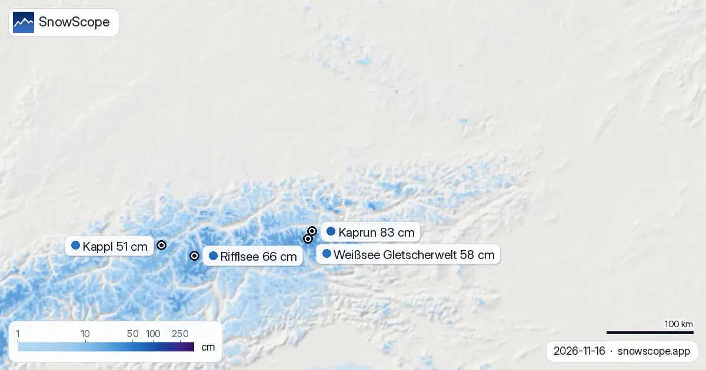

How many resorts in Austria have snow? 215 of 277 on 16 November
215 of the 277 resorts in Austria have snow on their upper slopes today. Kaprun leads with 19 cm.
See the live snow forecast for Kaprun in the SnowScope appSnow depth, powder alerts and the 3D map, free.
Which resorts have snow
Snow on the upper slopes is not the same as open runs: lifts open when the base is deep enough to groom, and the resort decides that.
Snow covers roughly 19,550 km² in Austria on 16 November, up 800 km² on yesterday. Roughly 38 % of the country's mapped mountains and hills are covered.
| Resort | Snow depth | New snow, 72 h | Coming, next days | Top |
|---|---|---|---|---|
| Kaprun | 83 cm | 2 cm | 11 cm | 3,024 m |
| Rifflsee | 66 cm | 2 cm | 11 cm | 2,804 m |
| Weißsee Gletscherwelt | 58 cm | 2 cm | 11 cm | 2,555 m |
| Kappl | 51 cm | 3 cm | 17 cm | 2,639 m |
| St. Anton/St. Christoph/Stuben | 50 cm | 3 cm | 18 cm | 2,642 m |
The resorts with the most snow
The deepest snow of the country's resorts is at Kaprun: 83 cm.
Close behind: Rifflsee (66 cm), Weißsee Gletscherwelt (58 cm), Kappl (51 cm) and St. Anton/St. Christoph/Stuben (50 cm).
At Kaprun: 2 cm of fresh snow over three days, 11 cm more expected by Thursday 19 November.
At Rifflsee: 2 cm of fresh snow over three days, 11 cm more expected by Thursday 19 November.
Snow lies on the upper slopes of 215 out of 277 resorts in Austria.
The rest of the shortlist: Weißsee Gletscherwelt: 58 cm on top, 2 cm in three days, 11 cm expected; Kappl: 51 cm on top, 3 cm in three days, 17 cm expected; St. Anton/St. Christoph/Stuben: 50 cm on top, 3 cm in three days, 18 cm expected.
How deep it is, height by height
Average depth of the snowpack by height band: between 500 and 1,000 m, under 1 cm on average, 3 % covered; between 1,000 and 1,500 m, 1 cm on average, 28 % covered; between 1,500 and 2,000 m, 3 cm on average, 71 % covered; between 2,000 and 2,500 m, 12 cm on average, 97 % covered; above 2,500 m: on average 23 cm (100 % white).
Forecast for the week
Over the next three days up to 15 cm is expected, and up to 50 cm over the week.
The snowiest day looks like Saturday 21 November, with up to 15 cm in the snowiest spots.
The second week adds up to 28 cm where it snows most.
Skiing conditions
The white area is growing, so more lifts and runs can open in the coming days if the cold holds.
Keep an eye on the forecast: the coming snow could change the picture quickly.
Today's snow cover
Last week's 16,250 km² has grown by 3,300 km². Below about 1,500 m the slopes are mostly green or brown.
New snow in the last three days
Vorarlberg, Tyrol and the Salzburg Alps got the most fresh snow over three days, up to 4 cm.
The last 24 hours alone brought up to 4 cm.
At least 5 cm fell over some 80 km².
How this start compares
Here is how the deepest resorts compare with their usual 16 November: Kaprun: 19 cm at about 1,894 m, against 22 cm in a normal year; Rifflsee: 19 cm at about 2,239 m, against 26 cm in a normal year; Weißsee Gletscherwelt: 38 cm at about 2,019 m, against 27 cm in a normal year; Kappl: 14 cm at about 1,906 m, against 19 cm in a normal year.
1 of these 4 resorts are above their usual depth for the date.
These depths are for one height on each mountain, below the top, so they read lower than the upper-slope numbers further down.
In past winters the best snow at Kaprun usually came early March / late March.
The neighbours today
For comparison, the neighbours on the same day: Switzerland: 53 % white, deepest Ovronnaz with 136 cm, up to 112 cm in the week ahead; Germany: 5 % white, deepest Zugspitze with 44 cm, up to 31 cm in the week ahead.
Planning a day on the snow
Above 2,000 m the ground is almost fully white (97 % covered), so runs up there have a continuous base.
Between 1,000 m and 2,000 m the cover is patchy, about 28 % white: expect grass and stones between the snow.
Below 1,000 m the slopes are still almost bare.
If you can choose the day, go after Saturday 21 November: the fresh snow then has time to settle and the roads to be cleared.
Tips for skiers
- Snow above the tree line can be wind-packed: watch the ridges.
- Read the local avalanche bulletin before going off-piste.
- Early-season snow is thin over rocks: ski the groomed runs first.
About these numbers
Resort snow depths are the deepest snow on the resort's upper slopes from the SnowScope snow model (about 1 km, run of 16 November); they are estimates for an area, not a measurement at one point. Station values are measurements on the date shown. Forecasts can change. Always read the official avalanche bulletin before going off-piste.
Cite this report
For research, teaching or the press: the numbers and charts are free to reuse under CC BY 4.0 with this citation.
SnowScope (2026), How many resorts in Austria have snow? 215 of 277 on 16 November, https://snowscope.app/blog/en/2026/11/austria-snow-report-16-november-2026.html, accessed 2026-11-16
SnowScope (Atlas Labs). (2026, November 16). How many resorts in Austria have snow? 215 of 277 on 16 November. SnowScope snow reports. https://snowscope.app/blog/en/2026/11/austria-snow-report-16-november-2026.html
BibTeX
@misc{snowscope2026austriasnowreport16novem,
author = {{SnowScope (Atlas Labs)}},
title = {How many resorts in Austria have snow? 215 of 277 on 16 November},
year = {2026},
month = nov,
howpublished = {\url{https://snowscope.app/blog/en/2026/11/austria-snow-report-16-november-2026.html}},
note = {Published 2026-11-16 20:42 UTC; accessed 2026-11-16}
}· CC BY 4.0 · Methods, data and tools →
Kaprun: snow and temperature by height, this winter vs last (tools) →
Follow Kaprun
Free: a message when fresh snow is coming, and the forecast every morning.
More snow reports

In 24 of 46 winters, resorts on the Italian and southern French side of the Alps had a relatively bigger winter than the northern side. The chart, the big years and the weather behind them.

On 13 November 2026 the weather stations in Stockholm and Helsinki measured 0 cm of snow while Sälen had 45 cm and Umeå 20 cm. Height, the sea, the city and the track of the storms explain it, with numbers from 46 past winters.

Ski 157 km of mapped runs in Serre Chevalier where the top of the mountain has a 100 % chance of snow by mid-December.